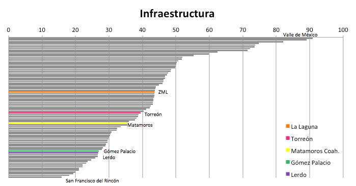
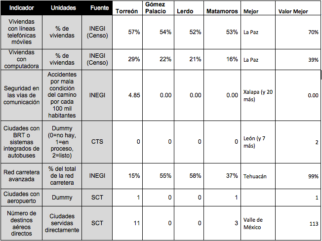

Infraestructura (Sectores precursores de clase mundial)
Por Lic. Rodrigo González Morales, 26/06/2014
Este subíndice considera características que facilitan la inserción de una ciudad en estándares de ciudades de calidad mundial, como puede ser el acceso a Tecnologías de información o los sistemas de transporte integrado o BRT (Bus Rapid Transit), conocidos en México como Metrobús. Dado que algunos indicadores de un municipio aplican a toda la zona metropolitana como es el aeropuerto, la posición de la ZML (32) es superior a la de los cuatro municipios por separado.
Los primeros indicadores se orientan al acceso a tecnología en la vivienda, específicamente telefonía móvil y computadoras. En ambos indicadores al igual que en los servicios públicos en vivienda del subíndice de Sociedad es clara la brecha entre Torreón y el resto de municipios, sin embargo la telefonía móvil tiene una mayor penetración ya que aún en Lerdo que es quien cuenta con un menor registro es de 52 % muy superior al 38 % de La Piedad, que es la ciudad con menor penetración. En el caso de la computadora en vivienda Torreón se encuentra muy por encima de la media de ciudades e igual que Saltillo, por ejemplo con 29 % de viviendas con computadora. Sin embargo Gómez Palacio y Lerdo con 22 % y 21 % respectivamente se sitúan muy por debajo de la media nacional, al igual que Matamoros con 16 %.
En accidentes por mala condición del camino, el IMCO solamente presenta registro para Torreón con 4.85 accidentes por cada 100 mil habitantes. Por lo cual el resto de municipios registran 0 al igual que Xalapa y otras 20 ciudades que lideran este indicador.
En el caso del sistema integrado de autobuses o BRT, son sólo 7 ciudades los que cuentan con él, aunque el IMCO contabiliza también los sistemas en proceso de acuerdo a la Secretaría de Comunicaciones y Transportes. Este indicador tiene tal valor en la competitividad internacional de acuerdo al IMCO, que si sólo el municipio de Torreón contara con BRT, la calificación de la ZML en este subíndice pasaría de 43.67 a 72.24, y su lugar global del 44 al 31.
Otro indicador de este subíndice es el porcentaje de carretera avanzada (cuatro carriles) sobre el total de carretera en el cual por su localización el municipio de Torreón es el que menos aporta en este aspecto. Sin embargo los dos indicadores siguientes corresponden al aeropuerto y número de destinos aéreos con que cuenta el municipio de Torreón y que coloca a nuestra ZML entre las 20 ciudades con mejor conectividad aérea.